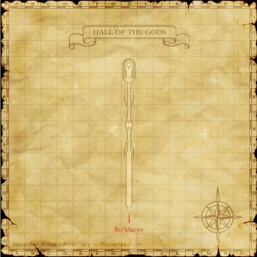

Before you begin
- Complete The Temple of Desolation.
Starting point
Gilgamesh / Oaken Door · Norg · K-8
People in this mission

Walkthrough
- Return to Norg and revisit Gilgamesh through the Oaken Door.
- Finish the discussion about the Mithra who offered a crystal. The mission changes to The Mithra and the Crystal.
Completion and reward
Story progression; no separate item reward.
Area maps
Open a zone below, then select a map to enlarge it. Match the named floors and grid coordinates in the steps; these are reference area maps, not a live position tracker.
Norg


Hall of the Gods



Zone guides
References
Steps are an original summary of the linked walkthrough and reviewed source. Other servers’ bonus rewards are not included. How to read requirements, waits and battlefield notes.
Additional level-75 reference
|
Walkthrough
- Since you cannot seem to go any further in the Hall of the Gods, go back to Norg and talk to Gilgamesh. He will tell you to talk to a Mithra who was trying to sell a crystal once.
Game Description
- Mission Orders
- A strange grate prohibits you from journeying deeper into the Hall of the Gods. The depression in the center may be the key to getting through. You should probably report this find to Gilgamesh.
Adapted from Eden Wiki: The Hall of the Gods · Contributors and history · CC BY-SA 4.0. Revision 8940. Layout, links and optional background text adapted for Zenith.